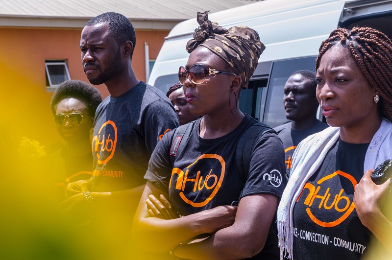

n-Fellowship
A 10-month strategic fellowship and job placement programme to becoming a top-notched software engineer.
Helps in the discovering and nurturing of young talents on their journey to becoming better software engineers in a changing world.
Selected candidates will go through immersive training from senior Software developers and mentors, have access to participate in Live projects while working in an excellent organizational culture.
